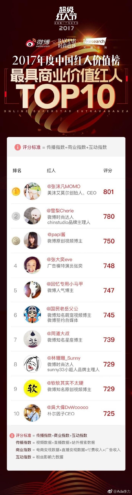

#创业#最近在看短视频，定位，创意，招聘等等。做短视频，还是原来广电系统，甚至影视行业里出来的人最在行，也会做得最专业，当然也很贵。之前咨询一家北京专业做视频的，五分钟的视频，报价二十万。中小企业的自制短视频优势在哪里呢？快，量大，成本低，独特。
#创业#今天把红人节上榜的Top100都关注一遍，发现以前确实完全不在自己的关注范围内。红人评选标准还是蛮有参考价值的： 评分标准=传播指数（视频数据+直播数据+站外搜索数据）+商业指数（电商变现数据+直播变现数据+付费收入+广告收入）+互动指数（粉丝影响力数据）广告行业有3B原则，就是Beauty美女 Beast动物 Baby婴儿。但是看红人Top100, 绝大部分在Beauty美女, 萌宠类只有三个人上榜，而母婴育儿类则一个都没有。也许2018年的排名会有所变化。